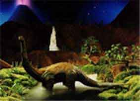
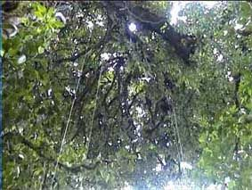

Pledicine Park
New Zealand's rainforests are recognised internationally as unique examples of the ancient forests of the super continent of Gwondaland. The remote Gwondaland wilderness park in New Zealand's south island is the setting for this unique travel opportunity. Only 5 hours drive from Dunedin, Fiordland is a mountainous region with an immense diversity of climates and ecosystems. It has 29 active volcanoes. The stunning landscape encompasses a panorama of volcanoes, forested mountains, lowland jungles and rolling savannas. On any day you can expect to encounter a wide range of dinosaurs.
including: Allosaurus, Patosaurus, Brachiosaurus, Brontosaurus, Triceratops



Schedules The 2018 schedule is listed below. Dates and availabilities are subject to change. For the most up-to-date information, call Reservations Department at (800) 544-7323. To register for the Jurassic Jungle Adventure
click here for the Contacts page.
Season Dates Winter 7 to 10 June Spring 15 to 18 October Summer 10 to 13 January Autumn 25 to 28 April